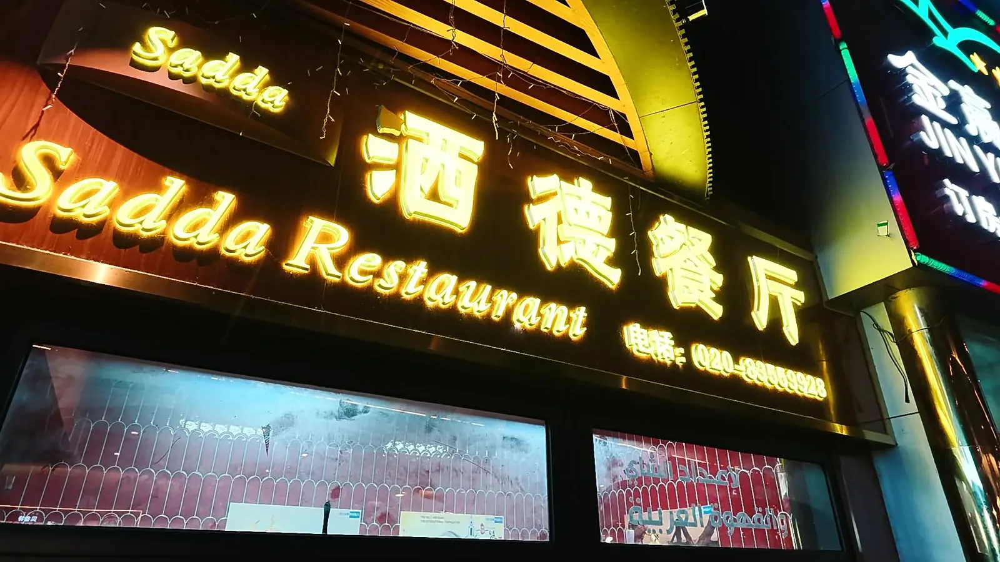

Mandi — lamb or chicken
المندي باللحم أو الدجاج
曼迪手抓饭（羊肉 / 鸡肉）
Slow-cooked spiced meat over long-grain rice.

Mandi, kabsa, saltah, and bread from the oven — on the ground floor of Jinying Building.
Gatherings
Tables for traders, families, and gatherings in Xiaobei. Call if you need a large table or a group meal.
Xiaobei
Ground floor, Jinying Building (金鹰大厦首层).
广州市越秀区环市中路316号金鹰大厦首层，洒德餐厅
By metro
Line 5, Xiaobei Station (小北站), Exit B
About 90 metres on foot.
Open in maps
The gold fascia on the Jinying Building arcade.
From a guest
“The fries are crisp outside and tender inside, the garlic lettuce is fresh and light, and the stir-fried lamb is tender and fragrant with chili. Service is attentive, the room is comfortable — recommended.”
Leave a review